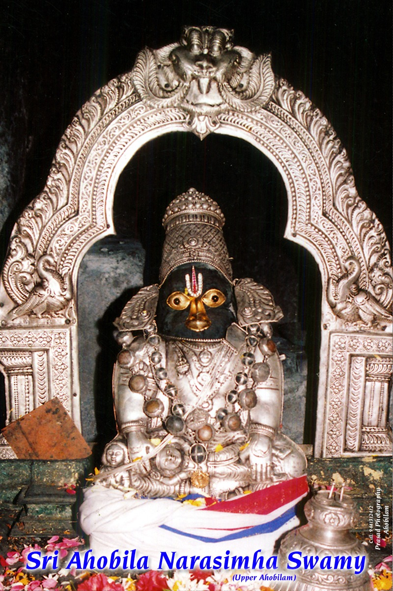
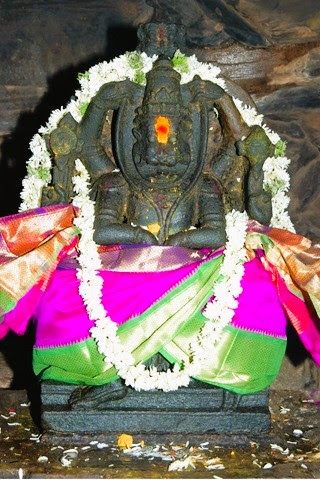
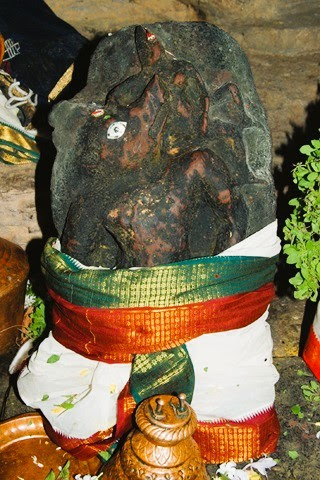
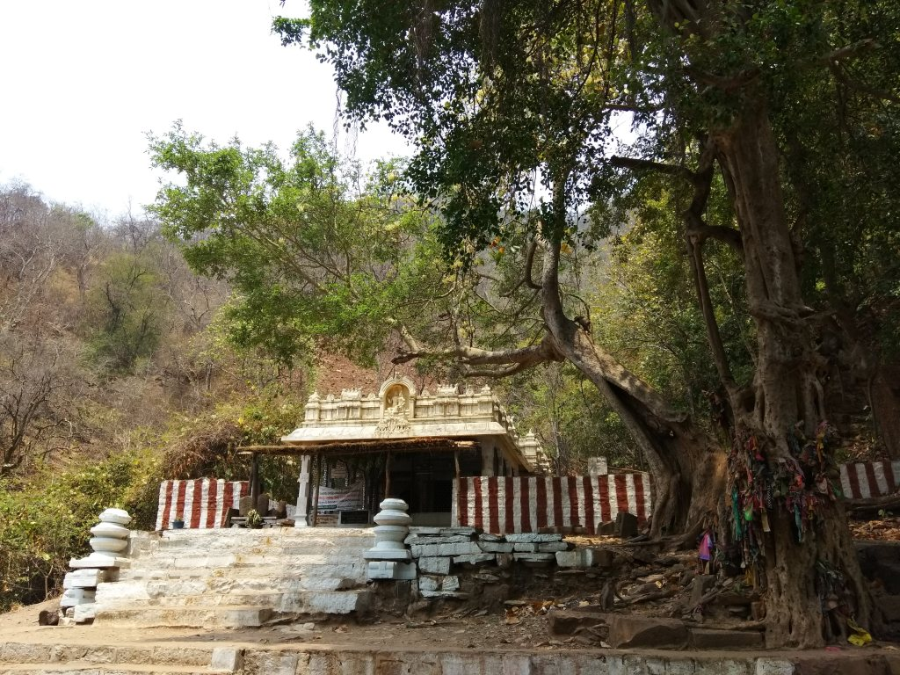
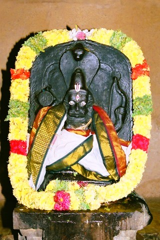
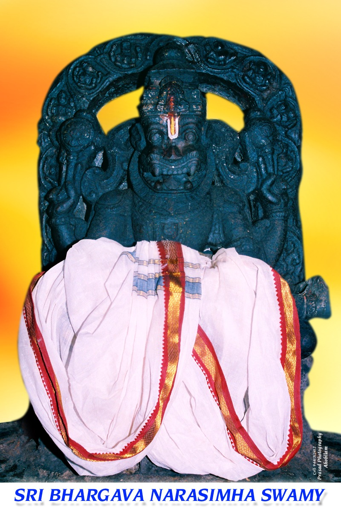
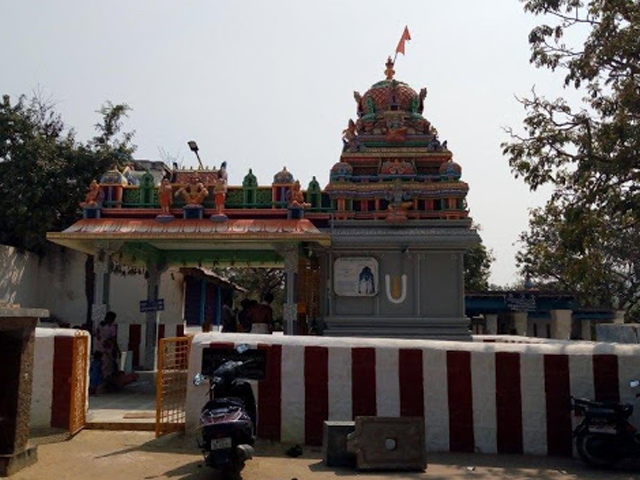
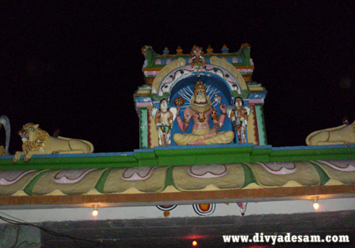
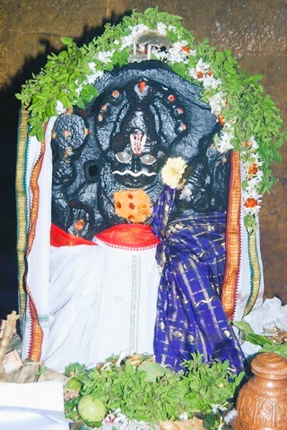

Sacred Abode of Nava Narasimha
108 Divya Desams · Kurnool District, Andhra Pradesh
Where the Lord appeared in nine divine forms amidst the sacred Eastern Ghats
Ahobilam, also known as Ahobalam or Singavel Kundram, is one of the 108 Divya Desams celebrated by the Alvars. Nestled deep within the Nallamala Forest of the Eastern Ghats in Kurnool district, Andhra Pradesh, it is the sacred site where Lord Vishnu manifested as Narasimha — the half-lion, half-human form — to slay the demon king Hiranyakashipu and protect his devoted son Prahlada.
The Kshetram is home to the celebrated Nava Narasimha — nine distinct forms of Lord Narasimha, each enshrined in a separate temple spread across Upper Ahobilam (Garuda Kshetram) and Lower Ahobilam, separated by approximately 8 kilometres of mountain terrain.
The site reached its architectural and cultural zenith during the Vijayanagara period and has been revered for over a thousand years. References appear in 9th-century Tamil devotional literature, making it one of the most ancient living temples of South India.

Sri Narasimha Swamy
"Ugram Veeram Maha-Vishnum Jvalantam Sarvato Mukham
Nrisimham Bhishanam Bhadram Mrityur-Mrityum Namamy-Aham"
Click on each shrine to explore its history, significance & darshan details








✦ Click on any shrine window to learn about its history, significance, trek details & darshan timings ✦
On Swathi Nakshatra — monthly Thirumanjanam (ritual bathing) for all nine shrines.
During Brahmothsavam (Feb–Mar, Masi month) — 10-day festival with extended timings and special processions.
Sponsorship: ₹5,000 for Thirumanjanam of all nine temples via Swati Trust.
Participate in the sacred services and contribute to the Devasthanam
Contribute to the restoration and upkeep of the ancient temple structures
Any amountDonateSponsor the education of young Vedic scholars preserving ancient traditions
₹ 1,000/monthDonateInternational devotees can contribute in multiple currencies with tax receipts
Multi-currencyDonateFund the digitization and documentation of temple heritage records
Any amountDonate* All donations are eligible for 80G tax exemption. Official receipts provided.
Annadanam (feeding devotees) is considered one of the highest forms of devotion. The Annamacharya Trust provides free meals to all pilgrims daily:
Support the temple Gosala (cow shelter) and other charitable dharmic initiatives:
Contribute towards feeding and caring for the sacred cows of the Gosala
₹ 500/monthSponsorExperience the divine presence of Lord Narasimha from anywhere in the world
Daily Aarti – Live Stream
Streaming daily at 6:00 AM & 6:30 PM IST
Available on:
Book Prasadam from the temple and receive it at your doorstep through our courier service.
Book PrasadamBy Train: Bombay Mail departs 9:55 PM, arrives Kadappa at 3:15 AM. From Kadappa, hire a taxi (~₹1,000 round trip, 100 km) or take a bus to Allagadda, then local bus to Ahobilam.
By Road: 9–10 hours via Renigunta → Kadappa → Allagadda → Ahobilam.
By Train: Thungabadra Express departs 7:00 PM, reaches Kurnool at 10:30 PM. From Kurnool, buses available to Allagadda, then local buses every 45 minutes to Ahobilam.
Last Bus: Returns from Ahobilam at 9:45 PM.
By Train: Prasant Express departs 2:00 PM, reaches Nandyal at 11:50 PM. From Nandyal, local transport to Ahobilam (65 km).
By Road: ~7.5 hours via Madanapalli → Cuddapah → Allagadda → Ahobilam.
Allagadda: 24 km – nearest town with regular bus connectivity to Ahobilam.
Nandyal: 65 km – nearest railway station with good connectivity.
Kurnool: ~90 km – nearest major city.
Best Season
Cool and pleasant weather makes trekking comfortable. Ideal for visiting all nine temples including the more arduous treks to Jwala and Pavana.
Festival Season
Brahmothsavam (10-day festival) during Masi month. Thousands of devotees attend. Book accommodation well in advance.
Monsoon Season
Lush greenery but some trek routes may be difficult. Forest permits may be restricted. Check conditions before planning.
Summer – Avoid
Hot weather makes trekking strenuous. If visiting, plan for early morning darshan only and carry sufficient water.
Quick visit: Lower Ahobilam + accessible Upper Ahobilam temples (Karanja, Yogananda, Chatravata)
Moderate pace: All accessible temples + one major trek (Jwala or Pavana). Recommended duration.
Complete pilgrimage: All nine temples including Jwala, Pavana, Ugra Stambham at a comfortable pace.
| City | Distance | Travel Time | Best Mode |
|---|---|---|---|
| Chennai | 400 km | 9–10 hrs | Train + Bus / Car |
| Hyderabad | 380 km | 7–8 hrs | Train + Bus / Car |
| Bangalore | 350 km | 7–8 hrs | Train + Car |
| Cuddapah (Kadapa) | 112 km | 3 hrs | Car / Bus |
| Nandyal | 65 km | 1.5 hrs | Car / Bus |
| Allagadda | 24 km | 45 min | Car / Bus |
| Kurnool | ~90 km | 2 hrs | Car / Bus |
Buses run every 45 minutes between Allagadda and Ahobilam. Last bus from Ahobilam departs at 9:45 PM.
Shared jeeps and autorickshaws available for trips to Bhargava (2 km) and other accessible temples. Negotiate fare before boarding.
Hire a taxi from Kadapa railway station for ~₹1,000 round trip (100 km). Convenient for families with luggage.
Shuttle service available between Lower and Upper Ahobilam during peak festival periods. Check at guest house for current schedule.
Wear traditional attire — dhoti/saree preferred. Avoid western clothes at temples.
Photography inside the sanctum sanctorum is not permitted. Respect the sacred space.
Wear comfortable trekking footwear for upper temple visits. Remove shoes at temple entrance.
Carry sufficient water. Drinking water points are available at key locations.
Keep phones on silent mode inside temples. Stay on marked trek paths.
Do not pluck flowers or disturb wildlife. Ahobilam is within a forest reserve.
Senior citizens and those with mobility limitations should plan for accessible temples (Karanja, Lower Ahobilam).
Forest permission may be required for certain trek routes. Verify at the entry point.
All nine temples are spread across approximately a 5 km radius in the Eastern Ghats
Temples: Karanja (roadside), Yogananda & Chatravata (2 km paved road), Lower Ahobilam (Prahlada Varadan)
Covers: Kroda → Malola → Jwala Narasimha (→ optional: Ugra Stambham)
⚠ Start early morning. Carry 2+ litres of water. Wear sturdy footwear.
Route: 250 steep steps climb followed by 4 km relatively flat terrain
⚠ Not recommended for those with knee or heart conditions.
Emergency Contact: Guest House Manager – 08519-252045
Weather Alerts: Check forest department notices before trek
Forest Permits: May be required for certain routes — verify at entry
Wildlife: Nallamala forest has wildlife — stay on marked paths
Guide Booking: Contact guest house manager for verified guide (~₹200)
Medical: Basic first aid at guest house. Nearest hospital in Allagadda (24 km)
Expert guides who explain the spiritual significance, history, and rituals of each temple. Available in Telugu, Tamil, Hindi & English.
Experienced local guides for Jwala, Pavana, and Ugra Stambham treks. They know the terrain, safe paths, and optimal timing. Strongly recommended for Jwala.
Capture the natural beauty and sacred architecture of Ahobilam with a guide who knows the best vantage points and permitted photography spots.
Dedicated assistance for VIP darshan coordination, special pooja arrangements, and smooth darshan experience at all nine temples.
Preserving and sharing the timeless spiritual wealth of Ahobilam
Complete collection of Narasimha stotras, kavachams, and hymns with audio, text, and meaning in Telugu, Sanskrit, and English.
Explore →Audio and text of the thousand names of Lord Vishnu. Listen to traditional recitations by temple priests.
Listen →The protective armour hymn of Lord Narasimha — text, audio, and transliteration for daily recitation.
Read →Spiritual discourses and pravachanams by eminent scholars on Narasimha tattvam, Bhagavat Gita, and Vaishnava sampradayam.
Watch →Detailed history from the 9th-century literary references through the Vijayanagara period to the present day. Inscriptions, art, and architecture documented.
Read →Learn about the Vishishtadvaita philosophy, the Alvars, Sri Vaishnava traditions, and the significance of the 108 Divya Desams.
Learn →10-day grand festival. Lord Prahlada Varadan processions. Thousands attend. Book accommodation early.
Monthly ritual bathing for all nine shrine deities. Special darshan and sevas.
Most sacred Ekadashi — Vaikunta Dwara Darshan. Extended temple hours and special sevas.
New year celebrations with special poojas and Panchanga Sravanam (new year almanac reading).
Assist with crowd management, darshan coordination, and devotee services during Brahmothsavam and other major festivals.
RegisterServe pilgrims with food distribution during Annadanam sessions. Earn spiritual merit through the highest form of service.
RegisterHelp pilgrims navigate the treks safely. Guide, assist, and ensure the well-being of devotees on the mountain paths.
RegisterContribute your skills in photography, videography, IT, or content creation to help preserve and share Ahobilam's heritage digitally.
RegisterAhobilam, Kurnool District, Andhra Pradesh – 518 543
08519-252045 / 08519-252024
Mobile: 94905 15284
info@ahobilamdevasthanam.org
6:00 AM – 8:00 PM (Daily)
Coordinates: 15.13°N, 78.90°E · Altitude: ~800m above sea level
Situated within the Nallamala Forest Reserve, Eastern Ghats